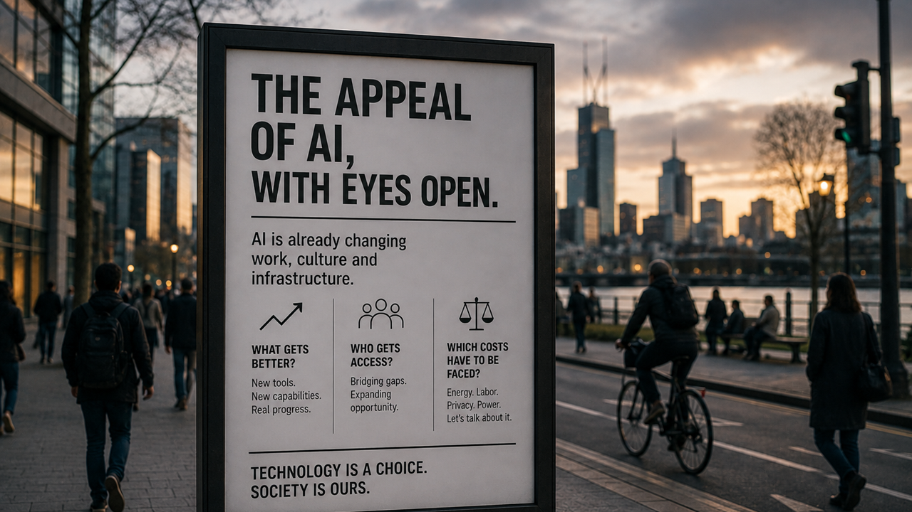

Image captionCity dusk scene with a large public sign titled "The Appeal of AI, Without Looking Away", featuring key questions on progress, access and costs amid busy urban life.
appealofai starts from a simple position: artificial intelligence is going to change a lot. Pretending otherwise does not buy society much time. The better question is what kind of change people can still shape while the technology is moving. The appeal lives there.
Personal view here, not investment advice, legal advice or a promise about the future. Sources and claims should be checked in context. Still, the view is clear enough to be worth stating plainly: AI can be messy, overfunded in places, under-governed in others and still genuinely useful. Those facts can sit in the same sentence without canceling each other out.
The position
A lot of AI commentary gets stuck in two bad moods. One side sells the technology as if every demo is destiny. The other side talks as if suspicion alone is a plan. The more useful middle is harder: ask what works, who benefits, what breaks, what gets cheaper, what gets weird and what deserves a public bargain before the bill arrives.
The positive case starts with a practical change: AI can give more people a working draft, a search partner, a coding partner, a translation layer, a tutor, a design assistant, a research map or a second pair of eyes. Sometimes that is small. Sometimes small is the whole point. A first move can be the difference between an idea staying stuck and an idea becoming testable.1
That matters for individuals, but it matters even more for teams, schools, clinics, small businesses and public services that usually do not get the cleanest tools first. If AI only makes the strongest companies stronger, the appeal collapses into another concentration story. If it widens access to competence, the technology becomes much easier to defend.
The rough parts
The rough parts are not footnotes. Synthetic spam, fake media, copyright fights, surveillance pressure, job disruption, data-center power demand, benchmark theater and expensive model races all belong in the frame. So does the language problem: the internet is already tired of generic, high-volume AI text that sounds polished and says very little. People can feel when a sentence has no witness behind it.2
Infrastructure is another reality check. AI is not a cloud-shaped abstraction. It runs on chips, power, water, cooling, grids, land, logistics and capital. That does not make the technology bad. It makes the tradeoff physical. If the next phase of AI needs enormous data centers, then the public deserves better answers about energy, local impact and what all that compute is supposed to buy. Useful intelligence per watt, per dollar and per square meter should become normal language, not specialist trivia.3, 4
Safety also has to be more than branding. When frontier labs release stronger models with guardrails, the story is not only capability. Governance has become part of the product: what is blocked, what is allowed, who gets trusted access, who audits the claims and what happens when a powerful tool is useful in exactly the areas where misuse is also plausible.
The appeal
The appeal of AI is practical help at the moment before a person usually stalls. A student can ask better questions before class. A founder can prototype before hiring a full team. A programmer can spend less time on glue code and more time on architecture. A patient can understand a medical letter well enough to ask a doctor sharper questions. The journalist, analyst, artist or teacher who can move faster without surrendering taste.
That appeal is fragile. It needs honesty. A generated paragraph is not automatically insight, a chart is not automatically proof, and a model release is not automatically progress for ordinary people. Better sourcing, better disclosure, better pricing and less lazy automation all matter. Tools do not become humane just because they are impressive.
So the editorial line here is balanced but not neutral in the bored sense. AI should be criticized where criticism is earned. It should also be defended where the benefits are real. The task is to keep both instincts awake: skepticism for the easy promise, curiosity for the tool, and a steady bias toward public upside.5
This is the starting point for appealofai: look for the useful upside, verify the claims and keep the rough parts in view. The worst AI content should not get to define what useful machine intelligence can still become.